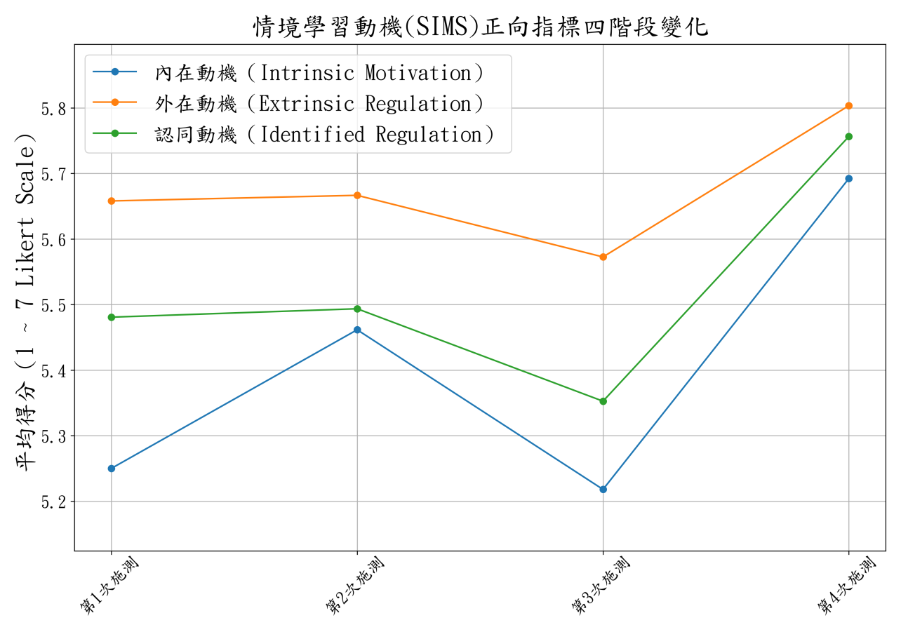
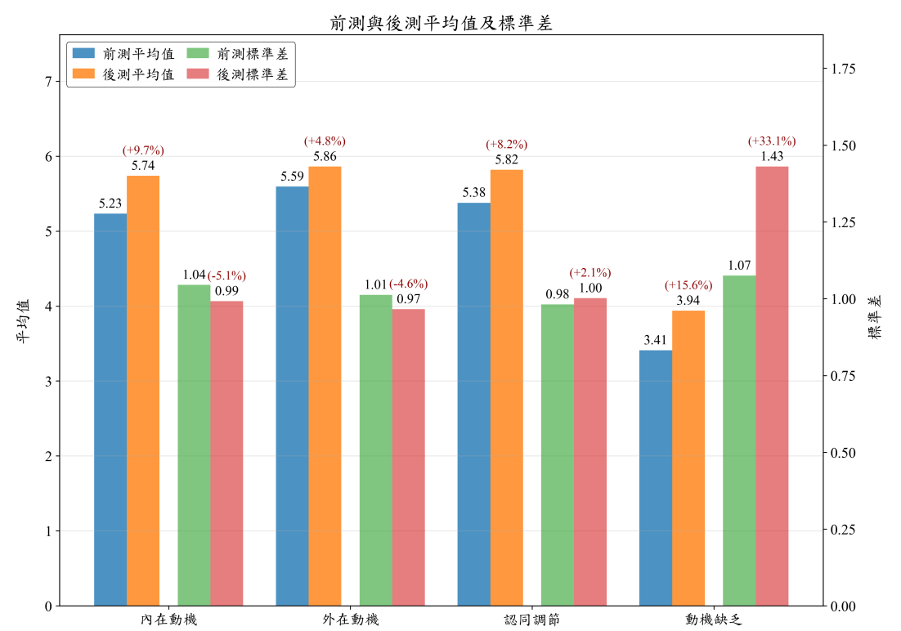

八年持續教學實踐研究所獲
教學實踐研究計畫
（含 1 件 USR）
（兩次教學實踐、一次高教深耕）

教學方法演進
- 108教學研究起點教育部
- 109績優計畫教育部
- 110持續實踐教育部
- 111USR 績優教師
甲等獎高教深耕計畫 - 112USR 計畫教育部
- 113績優計畫教育部
- 114.8以教學研究著作
升等教授2025/8/1 - 114校級教學特優獎南臺科技大學
- 115生成式 AI × PEA
執行中教育部
把教學想法帶進研究，再把研究帶回課堂。
108 學年至今，每一件計畫都從課堂裡的問題出發。
八年持續教學實踐研究所獲
本頁要回答：講者是誰？113 這個計畫在哪一段路上？
講解脈絡：6 件教育部核定計畫（含 1 件 USR）、3 次績優肯定；教學方法由翻轉教室、複習翻轉走到 PEA 循環；108–115 時間軸（含 2025/8/1 以教學研究著作升等教授、114 校級教學特優獎）；113 是這段路的一站。
口語講稿摘要
先介紹我自己。我從一百零八學年度開始，就一直把課堂上碰到的問題，拿來做教學實踐研究，累計六件計畫獲核定，其中包含一件 USR；109 與 113 年度計畫獲績優肯定。111 年執行高教深耕補助的 USR 課程實踐，獲選大學社會責任績優教師甲等獎。2025 年 8 月 1 日以教學研究著作升等教授；114 學年度榮獲本校教學優良教師校級教學特優獎；今年新核定的 115 計畫正在執行。這八年也有兩次沒有通過，不是每一年申請都會通過。今天講的 113，是這條路上的一站。接下來先用一頁，把這個計畫看完。
來源與待補素材
來源：114 教學優良教師決審簡報 v3 第 01 頁與講稿；講師自述；未通過案例一、二「原始紀錄」。
待補：無。
階段二：指定 71 題，到 6/8 做到哪裡
左邊是指定的題數，右邊是 6/8 檢核時的全班分布
指定
HDLBits71 題
另有自動批閱 25 題
6/8 檢核：HDLBits
班平均62
中位數72
最高114
怎麼看中位數 72：約一半學生做到指定量以上；平均 62 較低，表示也有人落後不少
談學生超標之前，先看全班的分布，不只看最高值

階段二：指定 71 題，到 6/8 做到哪裡
本頁要回答：「學生超標完成」這句話，要拿什麼數字來支持？
講解脈絡：左：指定題數 → 右：6/8 檢核 HDLBits 的全班分布 → 怎麼看中位數與平均 → 按鈕看原文。第 35 頁會看整封信。
口語講稿摘要
第二階段，我指定學生在 HDLBits 練七十一題，另外還有二十五題自動批閱。指定之後，學生實際做到哪裡？
畫面上，指定量和六月八日實際檢核的結果並排。HDLBits 的班平均是六十二，中位數七十二，最高一百一十四。這些數字也放進寄給學生的信，第 35 頁會看到。
中位數七十二，比指定的七十一多一點，表示約一半學生做到指定量以上。平均比中位數低，也提醒我要留意進度落後的學生。
右邊的數線，把指定量和實際檢核放在同一個尺度上。最高值只告訴我進度最前面的情形，不能代表整班。寫「學生超標完成」之前，先把全班的分布看清楚。
來源與待補素材
來源：113 成果報告 4.1（第 7 頁）、5.2（第 11 頁）、6.1（第 13 頁）；成果交流會簡報第 5 頁預估報告（2025-06-08，與第 35 頁同一封）。信件標題寫「預估報告」，講師確認 6/8 數字是實際檢核結果。「約一半」「有人落後」是講師由中位數與平均的解讀。資訊圖依本頁內容整理，數線為線性比例。
待補：6/8 是當時的檢核數字，不是期末最終數字；HDLBits 欄若有計分上限，解讀要再調整。
階段三：以前的期末專題，移到學期中
兩個小專題正式導入 LLM Coding：學生主導，AI 輔助
- 任務兩個小專題Shift-and-Add 乘法器、SPI 傳輸模組
- 做法學生主導，AI 輔助AI 產生片段、分析錯誤；學生統整與測試
- 結果僅少數進度超前者完成上板任務密度偏高，節奏還要調整
完成設計回饋信心提升
時程、工具卡住動機輕微下滑
任務往前移，時間和支援也要一起調整：這一輪還沒做到

階段三：以前的期末專題，移到學期中
本頁要回答：把難的任務往前移，發生了什麼事？
講解脈絡：三列：任務 → 做法 → 結果；下方分歧 → 接到第 45 頁第 3 次的低點。
口語講稿摘要
第三階段，我把以往放在期末的乘法器和 SPI，移到學期中段。右邊的時間圖，就是這次調整的位置；它是概念示意，不是在標確切的週次。
左邊先看任務和做法。兩個小專題正式導入 LLM Coding，讓 AI 產生程式片段、分析錯誤，但學生要自己統整和測試。學生是設計的主體，AI 是輔助工具。
再看結果。任務密度偏高，只有少數進度超前的學生完成上板。下面兩塊回饋要一起讀：完成設計的人回饋信心提升，因時程和工具卡住的人，則出現輕微的動機下滑。這是報告的教學觀察，沒有列出各自的人數。
後面的動機曲線，第三次也出現低點，可以放在一起對照，卻不能直接說就是任務造成的。這一頁我要留下的問題是：任務往前移，時間和支援有沒有一起調整？
來源與待補素材
來源：113 成果報告 4.1 第三階段（第 7–8 頁）、6.1（第 13 頁）。申請書與實際的差異見第 18 頁。資訊圖依本頁內容整理，為概念示意。
待補：報告對上板情形有兩種寫法：第 7 頁「僅有少數進度超前學生」完成，第 13 頁「有部分學生未能」部署；實際人數未列。「普遍回饋」「輕微下滑」為教學觀察，報告未列人數。
階段四：做專題之前，先把鷹架搭好
Toy-Processor 是全學期最難的任務，所以支撐也放得最多
- 2週課堂時間任務分解、概念鷹架
- 3份自學資料規格手冊、架構圖、影片
- 12組自動測試分段驗證功能
第 4 次「動機缺乏」仍升到 3.94
支援已提供，效果還要用資料確認支撐要具體到幾週、幾份、幾組；有效與否還要另外看

階段四：做專題之前，先把鷹架搭好
本頁要回答：「提供鷹架」這句話，具體要怎麼寫？
講解脈絡：三列：時間、資料、測試 → 下方提醒：有支撐不代表人人接得住 → 接到三條路。
口語講稿摘要
第四階段的 Toy-Processor，是一顆二十條指令的單週期處理器，也是全學期最難的任務。所以我先把支援準備好，再讓學生做整合。
請順著三列看。兩週課堂時間，帶學生拆任務、搭概念。三份自學資料，是指令集規格手冊、系統架構圖和教學影片。十二組自動測試，則讓學生分段驗證功能。右邊用鷹架來示意這三種支撐。
下面金色的提醒也要看。有了這些安排，第四次的動機缺乏仍然升到三點九四。我知道自己提供了哪些支援，但還不能因此說它們已經有效；誰接不住、為什麼接不住，還要繼續看資料。
「提供鷹架」這句話太抽象，所以我寫到幾週、幾份資料、幾組測試。接下來，先看這顆處理器是什麼。
來源與待補素材
來源：113 成果報告 4.1 第四階段（第 8 頁）、6.1（第 13 頁）；動機缺乏 3.94 見第 14 頁。「3 份」是講師把手冊、架構圖、影片歸成三項。資訊圖依本頁內容整理，為概念示意。
待補：鷹架各項的使用情形與效果，報告沒有數據。
AI 能寫程式之後，評量改問什麼
AI 會寫程式，評量就不能只看交出來的程式
- 選擇題問概念統整與應用避免過度直述或單純記憶的題型
- 實作題附設計思路佐證撰寫過程，不只呈現結果
AI 會寫程式之後，評量要看得到概念和設計思路

AI 能寫程式之後，評量改問什麼
本頁要回答：學生可以用 AI 之後，評量要怎麼跟著變？
講解脈絡：兩列評量調整 → 期末兩種組合 → 右圖看理解與證據界線 → 配分見第 32 頁。
口語講稿摘要
學生可以用 AI 寫程式之後，我的評量也要跟著調整。請先看上面兩列：選擇題多問概念統整和應用，少停在直述和記憶；實作題則要附上簡短的設計思路，讓我看得到學生為什麼這樣做。
下面是期末的兩種計分組合。共同部分都是六十題選擇題；組合一，加上專題實作；組合二，加上四十題專題補救觀念測驗。兩種組合擇優計分，不是把兩個部分全部加在一起。
右邊的圖提醒我，要從程式成品往理解追問：學生能不能統整概念，能不能說明設計的理由。不過，這些是評量做法的調整，報告還沒有分析它們本身的成效。
配分剛才看過，這裡談的是評量內容怎麼改。我一直問自己：學生用了 AI，我的評量還看得出學生懂多少嗎？
來源與待補素材
來源：113 成果報告 4.3（第 9 頁）。配分見第 32 頁。資訊圖依本頁內容整理，為概念示意。
待補：報告未列設計思路說明的評分方式，也沒有分析這些調整的效果。補救測驗屬期末新增，見第 34 頁。
動機曲線一：正向三構面，第 3 次最低

文字要和圖對得上：不能只比起點和終點

動機曲線一：正向三構面，第 3 次最低
本頁要回答：正向動機四次施測，畫出來長什麼樣子？
講解脈絡：三條線 → 第 3 次（RTL 階段）是低點 → 第 4 次（AI 專題後）最高 → 文字要和圖對得上 → 下一頁看動機缺乏。
口語講稿摘要
這張原圖呈現四次 SIMS 的平均。內在動機、認同調節和外在調節，三條線共同的走勢是：第三次最低，第四次最高。右邊的小圖只整理這個走勢，精確數值仍以原圖為準。
報告文字把內在動機寫成「穩定上升」，可是圖上第三次有一個低點。因此，寫結果時不能只比較起點和終點，也要把中間的變化交代出來。
第三、第四次對應的教學階段，可以幫我們理解情境，但曲線本身不能證明是任務或 AI 造成這些變化。原圖也可以點開，放大看標示。
如果只挑正向構面，很容易變成單一的好消息。下一頁把動機缺乏一起放進來，看看結果會多出什麼提醒。
來源與待補素材
來源：成果交流會簡報第 8 頁正向構面圖（原圖未改）；113 成果報告 6.2（第 14 頁）與圖一（第 15 頁）。右側資訊圖的形狀為示意，數值以左圖為準。
待補：成果簡報第 8 頁的結語「初期適應 → 中期低潮 → 後期提升」沒有沿用：第 2 次多數構面略升，與「初期適應」的說法不完全吻合。圖的橫軸只寫「第 N 次施測」，各次對應的教學階段依報告 6.1 補上。
動機曲線二：動機缺乏，第 4 次也升高

只挑正向的圖，就會錯過這一條線

動機曲線二：動機缺乏，第 4 次也升高
本頁要回答：動機缺乏的曲線，又說了什麼？
講解脈絡：動機缺乏四點 → 第 4 次升到 3.94 → 兩張一起看才完整 → 只有平均，看不到每位學生。
口語講稿摘要
這一張原圖看動機缺乏。四次平均依序是三點四四、三點五六、三點四四、三點九四。前三次變動不大，第四次升得比較明顯。
右邊把第三次到第四次並排看：正向三構面的平均升高，動機缺乏也升高。所以結果不能只寫一句「動機提升」，兩邊都要交代。
但目前看到的仍然是平均數，還不知道每位學生各自怎麼變，也不能直接歸因於 AI。接下來看統計檢定，再看分散程度和資料的限制。
來源與待補素材
來源：成果交流會簡報第 8 頁動機缺乏圖（原圖未改）；113 成果報告 6.2（第 14 頁）與圖二（第 15 頁）。3.44、3.56、3.44、3.94 為圖上標示。
待補：無。
統計結果：好消息和警訊都要寫
第 3 次 → 第 4 次（AI 協作專題前後），同一批學生配對比較
升高的好消息
內在動機5.23 → 5.74d = 0.55
認同調節5.38 → 5.82d = 0.53
一起升高的警訊
動機缺乏3.41 → 3.94d = 0.51
動機缺乏標準差1.08 → 1.43分散 +33%
好消息和警訊都寫：同一步，兩邊都有中等效果量

統計結果：好消息和警訊都要寫
本頁要回答：動機變化，統計上站得住嗎？
講解脈絡：左：內在動機、認同調節升高，中等效果 → 右：動機缺乏也升高、分數散開 → 綠色區塊：相對自主指數未達顯著變化，構面可能抵銷 → 按鈕看完整兩張表。
口語講稿摘要
接下來看第三次到第四次的配對比較。這一頁照統計表列出的數值來說；前面曲線圖的平均，和這裡的表格並不完全一致。差異原因仍要核對原始資料，我不把兩組數字混成一組。
先看兩張比較卡。好消息這邊，內在動機從五點二三升到五點七四，認同調節從五點三八升到五點八二，效果量分別是零點五五和零點五三。警訊這邊，動機缺乏也從三點四一升到三點九四，效果量零點五一。
動機缺乏的標準差，從一點零八變成一點四三，大約增加三分之一。這是在說分數更分散，還不是說學生已經分成兩群。
再看綠色區塊，相對自主指數從三點四三到三點五五，p 值零點六七七，未達顯著變化。不同構面的變化可能互相抵銷，但右邊的蹺蹺板只是一種可能解釋，還不是已驗證的機制。
完整統計表可以按鈕展開。這個案例是單組、沒有對照組，所以我能報告觀察到的差異，不能直接寫成 AI 證明有效。
來源與待補素材
來源：成果交流會簡報第 9–10 頁兩張表；113 成果報告 6.3（第 15–16 頁）與 6.4（第 17 頁：標準差 1.07 → 1.43、變異幅度 33.1%）。標準差寫 1.08 是 1.075 四捨五入，全稿統一。資訊圖依本頁內容整理，為概念示意。
待補：曲線圖與配對統計表的平均不完全一致（如動機缺乏第 3 次 3.44 與 3.409），差異原因須核對原始配對資料；本頁依原統計表，不推定是不同樣本所致。①報告 6.3 文字的外在調節為 4.195 → 4.398，簡報表格與報告 6.4 為 5.593 → 5.862（前 5.59、後 5.86），本頁用後者。②效果量說法不一：簡報把 η²p .13 標「中等偏大」、.09 標「中等」，報告寫 .13「中等」、.09「中等偏小」；本頁只列數字。③相對自主指數 η²p 簡報 0.00、報告 .005。④表一標 n = 39，表二標 n = 41（報告第 16 頁），見第 38 頁。⑤外在調節以 RAI 公式驗算，5.593 → 5.862 才相符，見第 40 頁。
分數散開的，只有動機缺乏

平均之外也看分散；分散不等於已經分成兩群

分數散開的，只有動機缺乏
本頁要回答：只看平均，會漏掉什麼？
講解脈絡：左圖看紅色長條（後測標準差）→ 右圖：動機缺乏 +33.1%、其他三項 −5.1%～+2.1%（點的位置為示意） → 下方：散開不等於兩群 。
口語講稿摘要
請先看原圖的紅色長條，那是後測的標準差。前三個動機構面的變化較小，動機缺乏的增幅最明顯：圖上從一點零七到一點四三，增加百分之三十三點一。前面寫一點零八，是表格的一點零七五四捨五入後的表示，這裡保留原圖的標示。
平均數讓我知道整體往哪裡走，標準差則補充學生分數的分散程度。右邊的點，只是幫忙理解「散開」的示意，不是每一位學生的實際位置，也不是原始分布。
報告用了「贏者全拿、輸者全輸」這樣的說法，現在回頭看，我會寫得更保守。分數更分散，不足以證明學生分成兩群；要看每位學生前後怎麼變，才能繼續討論。下一輪我要整理的，就是個別學生的變化。
來源與待補素材
來源：113 成果報告 6.4（第 17–18 頁）與圖三（原圖未改）；表二（第 16 頁）。資訊圖依本頁內容整理，為概念示意。
待補：圖三外在調節標準差標示 −4.6%，由表二 1.012→0.966 計算約 −4.5%，屬四捨五入差異。圖三的外在調節平均 5.59→5.86，與 6.3 文字的 4.195→4.398 不一致（第 48 頁已註記）。「贏者全拿」為報告原文，講師在講稿中保守修正；是否這樣說請講師確認。
同一個專題，兩種感受
課程難度的回饋，報告說「明顯呈現兩極分化」
基礎良好的學生「專題任務極具挑戰性，因此更激發我額外投入 HDL 練習。」
基礎薄弱的學生「每週新知識與專題壓力過大」
學生的期待提供更多中間階段的任務，緩和認知負擔與心理壓力
同一個任務，兩種感受；開放題說出了分數看不到的事

同一個專題，兩種感受
本頁要回答：動機缺乏的分數散開，學生自己怎麼說？
講解脈絡：左右兩句並列 → 下方學生的期待 → 接到反思的「專題拆小」。
口語講稿摘要
前面看過分數的分散，這一頁再看學生怎麼描述難度。報告整理的回饋裡，基礎較好的學生說，專題很有挑戰性，反而讓自己多練 HDL；基礎較弱的學生則覺得，每週新知識加上專題，壓力太大。
同一個任務，可能有不同感受。這些話能和前面的統計放在一起討論，但只是報告整理的例子，不是全班的比例，也不能證明就是哪一群學生的分數在變。
學生希望多一些中間階段的任務。右邊虛線畫出的階梯，是這個期待，不是已經提供的成果。後面反思裡的「專題拆成小關卡」，就接回這項回饋。
來源與待補素材
來源：113 成果報告 6.5（第 19 頁）。資訊圖依本頁內容整理，為概念示意。
待補：引文為報告整理的學生回饋，尚未逐筆對回原始回覆；基礎好壞的分類方式，報告未說明。